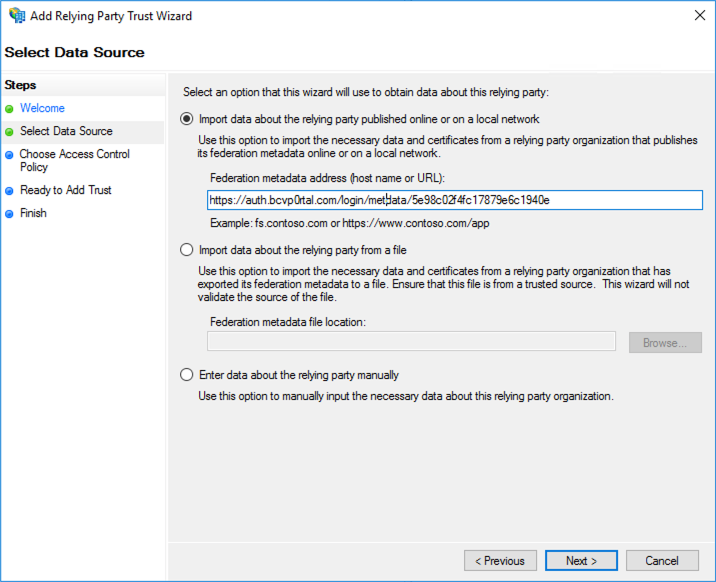

---
title:使用 Active Directory 聯合身份驗證服務配置單點登錄
parent: Gallery Settings
description: In this topic you will learn how to configure Gallery to support single sign-on using Active Directory Federation Services (ADFS). 
---

<article class="bcls-article">
  <h1>使用Active Directory聯合身份驗證服務配置單點登錄</h1>
  <summary>{{ page.description }}</summary>
  <section class="bcls-section">
    <h2 id="setup">開始之前</h2>
    <p>完成下列初始設定步驟：</p>
    <ol class="bcls-tasklist-restart">
      <li>遵循以下說明為iDP啟動的登錄啟用RelayState <a href="https://docs.microsoft.com/en-us/previous-versions/windows/it-pro/windows-server-2008-R2-and-2008/jj127245(v=ws.10)?redirectedfrom=MSDN#configuration-required">這裡</a>。位置會因使用的 ADFS 版本而有所不同。</li>
      <li>重新啟動 ADFS 服務，以便套用變更。</li>
    </ol>
  </section>
  <section class="bcls-section">
    <h2 id="add_gallery_profile">新增主機庫存取控制設定檔</h2>
    <ol class="bcls-tasklist-restart">
      <li>打開<strong>管理工具</strong>從Windows的“開始"菜單或“控制面板"中，然後打開<strong>AD FS管理</strong>應用。
        <figure class="bcls-figure"></figure>
      </li>
      <li>打開<strong>服務&gt;證書</strong>在左側的資源管理器面板中。
        <figure class="bcls-figure"></figure>
      </li>
      <li>雙擊<strong>令牌簽名</strong>您要使用的證書。
        <figure class="bcls-figure"></figure>
      </li>
      <li>點擊<strong>細節</strong>標籤，然後單擊<strong>複製到文件…</strong>
        <figure class="bcls-figure"></figure>
      </li>
      <li>點擊<strong>下一個</strong>在導出嚮導中，然後選擇<strong>Base-64編碼的X.509（.CER）</strong>選項。
        <figure class="bcls-figure"></figure>
      </li>
      <li>將憑證檔案儲存至本機檔案系統，然後在文字編輯器中開啟。這是用來設定圖庫存取控制設定檔的憑證。</li>
      <li>開啟「  圖庫」  模組。</li>
      <li>點擊<strong>設定值</strong>。</li>
      <li>點擊<strong>訪問控製配置文件</strong>在左側導航欄中。</li>
      <li>點擊<strong>創建個人資料</strong>。</li>
      <li>給它一個<strong>名稱</strong>然後選擇<strong>SSO-需要用戶名和密碼才能訪問</strong>。
        <figure class="bcls-figure"></figure>
      </li>
      <li>在裡面<strong>SAML 2.0端點（HTTP）</strong>字段，輸入指向您的ADFS服務器的iDP啟動的登錄頁面的URL。這通常以<code translate="No">IdpInitiatedSignOn.aspx</code>。例如，如果SP啟動的登錄鏈接為<code translate="No">https://sso-test.brightcove.com/adfs/ls</code>，由iDP啟動的登錄頁面為<code translate="No">https://sso-test.brightcove.com/adfs/ls/IdpInitiatedSignOn.aspx</code>。</li>
      <li>檢查<strong>我的SSO系統是ADFS（Active Directory聯合身份驗證服務）</strong>選項。</li>
      <li>將您在第6步中保存的證書複製並粘貼到<strong>X.509證書</strong>場地。
        <figure class="bcls-figure"></figure>
      </li>
      <li>點擊<strong>保存</strong>保存訪問控製配置文件。新的存取控制設定檔應該會出現在設定檔清單中。
        <figure class="bcls-figure"></figure>
      </li>
      <li>返回AD FS管理應用程序，打開<strong>信賴方信託</strong>。
        <figure class="bcls-figure"></figure>
      </li>
      <li>點擊<strong>添加信賴方信任…</strong>在右側面板中。</li>
      <li>點擊<strong>開始</strong>在嚮導中，然後粘貼<strong>元數據網址</strong>在步驟15中顯示的<strong>聯盟元數據地址</strong>場地。
        <figure class="bcls-figure"></figure>
      </li>
      <li>點擊<strong>下一個</strong>然後給您的依賴方信任一個名字。
        <figure class="bcls-figure"></figure>
      </li>
      <li>繼續點擊<strong>下一個</strong>直到<strong>結束</strong>步。取消選中<strong>配置此應用程序的聲明發布策略</strong>複選框。點擊<strong>關閉</strong>。
        <figure class="bcls-figure"></figure>
      </li>
    </ol>
    <p>您現在應該可以將入口網站體驗與建立的存取控制設定檔產生關聯。經驗發佈之後，瀏覽至它應該會經過 ADFS 登入工作流程。</p>
  </section>
</article>